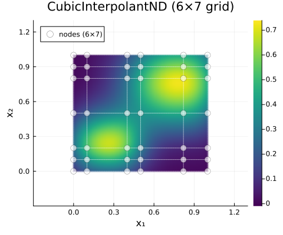
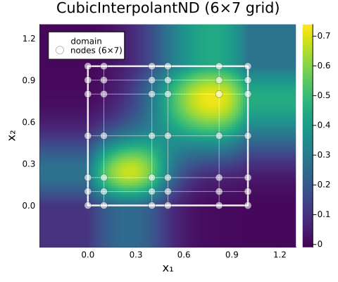
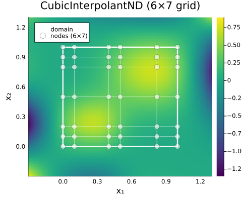
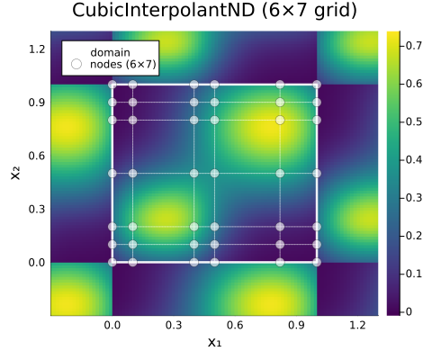
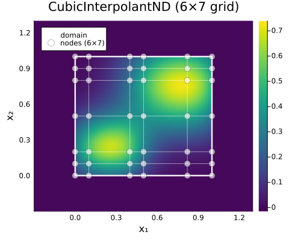
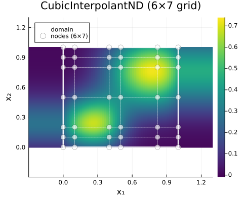
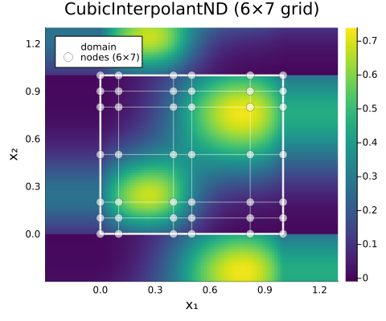

Extrapolation (ND)
Extrapolation in ND works per-axis, using the same modes as 1D extrapolation.
Modes
| Mode | Behavior |
|---|---|
NoExtrap() | DomainError (default) |
ClampExtrap() | Clamp to boundary value |
ExtendExtrap() | Extend boundary polynomial |
WrapExtrap() | Wrap coordinates periodically |
FillExtrap(v) | Return constant fill value v |
All axes that use FillExtrap must share the same fill value. The OOB check is applied per-axis and returns a single scalar, so mixed fill values (e.g. (FillExtrap(0.0), FillExtrap(NaN))) are not supported.
Visualization
All examples use a Franke-lite test function — two Gaussian peaks arranged diagonally on $[0, 1]^2$:
using FastInterpolations
f(x, y) = 0.75exp(-((4x-1)^2 + (4y-1)^2)) + 0.75exp(-((4x-3)^2 + (4y-3)^2)/2)
xs = [0.0, 0.1, 0.4, 0.5, 0.82, 1.0]
ys = [0.0, 0.1, 0.2, 0.5, 0.8, 0.9, 1.0]
data = [f(xi, yj) for xi in xs, yj in ys]
kw = (size=(480, 400), xlims=(-0.3,1.3), ylims=(-0.3,1.3))NoExtrap() (Default)
Domain-only view — queries outside $[0, 1]^2$ throw DomainError:
itp = cubic_interp((xs, ys), data; bc=CubicFit(), extrap=NoExtrap())
plot(itp; kw...)
ClampExtrap()
Boundary values are held constant — flat color bands extend from each edge:
itp = cubic_interp((xs, ys), data; bc=CubicFit(), extrap=ClampExtrap())
plot(itp; kw...)
ExtendExtrap()
Boundary polynomials extend beyond the domain — the cubic pieces continue their natural curvature:
itp = cubic_interp((xs, ys), data; bc=CubicFit(), extrap=ExtendExtrap())
plot(itp; kw...)
WrapExtrap()
Coordinates wrap periodically. Since the data is not periodic, a visible seam appears at the boundaries:
itp = cubic_interp((xs, ys), data; bc=CubicFit(), extrap=WrapExtrap())
plot(itp; kw...)
WrapExtrap() simply maps coordinates back into the domain via modular arithmetic. The interpolant itself is unaware of periodicity, so a C⁰ seam (jump in derivatives) is expected at the boundary.
For true periodic interpolation, use PeriodicBC() with cubic splines. PeriodicBC() enforces C² continuity at the wrap boundary — matching function value, first derivative, and second derivative across the period — producing a seamless, smooth result.
When bc=PeriodicBC() is set on an axis, WrapExtrap() is automatically applied for that axis.
FillExtrap(0.0)
Out-of-domain queries return the fill value (0.0 here) — the interior interpolant drops to zero at the boundary:
itp = cubic_interp((xs, ys), data; bc=CubicFit(), extrap=FillExtrap(0.0))
plot(itp; kw...)
Per-Axis Combinations
Different extrapolation modes can be assigned independently to each axis via a tuple:
itp = cubic_interp((x, y), data; extrap=(ClampExtrap(), ExtendExtrap()))Constant × None
Constant extrapolation on x₁, strict domain on x₂ — the heatmap extends only horizontally:
itp = cubic_interp((xs, ys), data; bc=CubicFit(), extrap=(ClampExtrap(), NoExtrap()))
plot(itp; kw...)
Constant x Wrap
Constant extrapolation on x₁, wrap periodically on x₂:
itp = cubic_interp((xs, ys), data; bc=CubicFit(), extrap=(ClampExtrap(), WrapExtrap()))
plot(itp; kw...)
See Also
- 1D Extrapolation — Detailed mode descriptions with visualizations
- Overview — ND API introduction